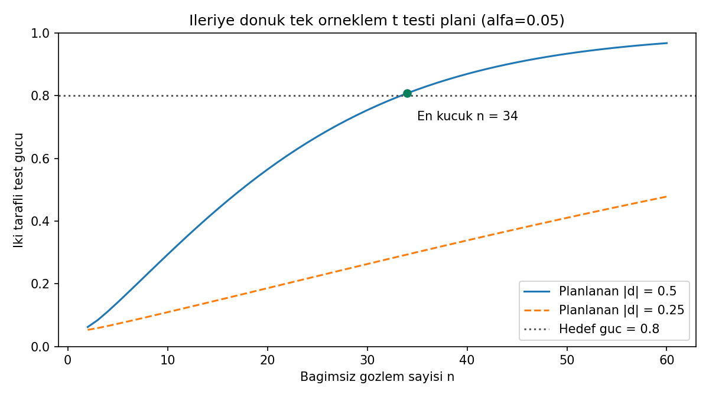

10 / HATA, GÜÇ VE TEK ÖRNEKLEM T TESTI
Testi yorumla, yeni çalışmayı planla.
Test: n = 25 · Güç planı: d = 0,50, α = 0,05, hedef = 0,80
Sorudan yönteme
Ortalamanın 50’den farklı olup olmadığını test ettik. Gelecekte 5 puanlık farkı yakalamak için kaç gözlem gerekir?
Test için t = (55−50)/(10/√25) = 2,5. Güç planında merkez dışı t dağılımı ve önceden belirlenen d = 5/10 = 0,50 kullanılır.
Gör, karşılaştır, yorumla

Testin çift yönlü p değeri 0,019654’tür. Planlanan etki için n = 33’te güç 0,795366; n = 34’te 0,807778’dir. %80 hedefine ulaşan en küçük tam sayı n = 34’tür.
Test özeti veri.csv, ileriye dönük tasarım plan.csv içindedir. Planlanan etkiyi gözlenen sonuçtan türetilmiş “gözlenen güç” gibi sunmayın. SPSS’te güç hesabı iki kuyruğu da içerir.
30 referans değerinin tamamı
Gösterim yuvarlatılmıştır; kodlar tam duyarlıklı CSV’yi kullanır.
| Grup | Ölçü | Değer |
|---|---|---|
| girdi | hacim | 25 |
| girdi | ortalama | 55 |
| girdi | standart_sapma | 10 |
| girdi | referans | 50 |
| girdi | alfa | 0.05 |
| plan_girdi | hacim | 34 |
| plan_girdi | fark | 5 |
| plan_girdi | standart_sapma | 10 |
| plan_girdi | alfa | 0.05 |
| plan_girdi | hedef_guc | 0.8 |
| test | serbestlik | 24 |
| test | standart_hata | 2 |
| test | t | 2.5 |
| test | p_cift | 0.01965417512 |
| test | cohen_d | 0.5 |
| test | kritik_t | 2.063898562 |
| test | alt_sinir | 50.87220288 |
| test | ust_sinir | 59.12779712 |
| test | hata_payi | 4.127797123 |
| test | genislik | 8.255594247 |
| test | reddet_cift | 1 |
| plan | plan_d | 0.5 |
| plan | plan_serbestlik | 33 |
| plan | plan_kritik_t | 2.034515297 |
| plan | merkezdisilik | 2.915475947 |
| plan | guc | 0.8077775013 |
| plan | beta | 0.1922224987 |
| plan | gereken_hacim | 34 |
| plan | onceki_guc | 0.7953658415 |
| plan | gereken_guc | 0.8077775013 |
Aynı veri, üç yazılım
ZIP’i tamamen ayıklayın. Çalışma klasörü b10/ornek-01 olmalıdır. Kodlar bilgisayarınızda çalışır.
Python
py cozum.py --check --grafikNumPy, pandas, SciPy ve Matplotlib gerekir. Beklenen: 30 kontrol değeri eşleşiyor.
R / RStudio
Rscript --vanilla cozum.R --check --grafikStandart R yeterlidir. RStudio konsolunda source("cozum.R") yalnız hesapları gösterir; otomatik kontrol için:
kontrol_et(sonuc, read.csv("beklenen-sonuclar.csv", stringsAsFactors=FALSE))IBM SPSS 29 · çalışma kabulü bekliyor
SPSS 29 adım adım kontrol rehberi
CD 'C:/.../b10/ornek-01'.
INSERT FILE='spss-dogrula.sps' ERROR=STOP.Sonra aynı klasörde terminalden:
py spss_karsilastir.py --surum 29 --rapor spss-sonuc.jsonSPSS dışa aktarımı olmadan bu kontrol geçmez. SPV çıktısını ve JSON raporunu birlikte saklayın.
Önce tahmin et, sonra açıkla
n = 33 neden %80 güç hedefi için yeterli kabul edilmiyor?
Gerekçeli yanıtı göster
Güç 0,795366’dır ve 0,80’in altındadır. İki ondalığa yuvarlayıp 0,80 görmek yeterli değildir; karar tam duyarlıklı değerle verilir.
Doğrulama durumu
| Ortam | Durum |
|---|---|
| Python | 30 referans değeri; grafik üretimi ve hatalı girdi kontrolleri geçti. |
| R 4.3.3 | 30 referans değeri ve Python–R sonuç karşılaştırması geçti. |
| IBM SPSS | Syntax hazır. Gerçek SPSS çalıştırması ve çıktı kabulü bekliyor. |
17 Eylül 2026. Sayısal uyum, araştırma varsayımlarının sağlandığını kanıtlamaz.